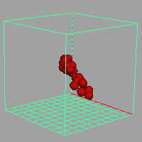

可使用流体的力移动 nParticle。

有关此技术的示例，请选择，然后在 Techniques 文件夹中观察 WhirlyParticle.ma。有关导入流体示例的信息，请参见导入流体示例。
使用流体的力移动粒子
- 创建一个动力学流体。有关详细信息，请参见动态栅格(Dynamic Grids)。
- 在流体容器内部移动粒子形状。粒子必须位于受流体影响的容器内部。有关创建粒子的详细信息，请参见创建 nParticle。
- 同时选择流体和粒子形状。
- 选择“字段/解算器 > 指定给选定对象”(Fields/Solvers > Assign to Selected)。
- 使用 Maya 窗口底部的播放控件播放模拟。
- 根据需要修改效果。
有关 nParticleshape 属性的详细信息，请参见 nParticleShape 节点。